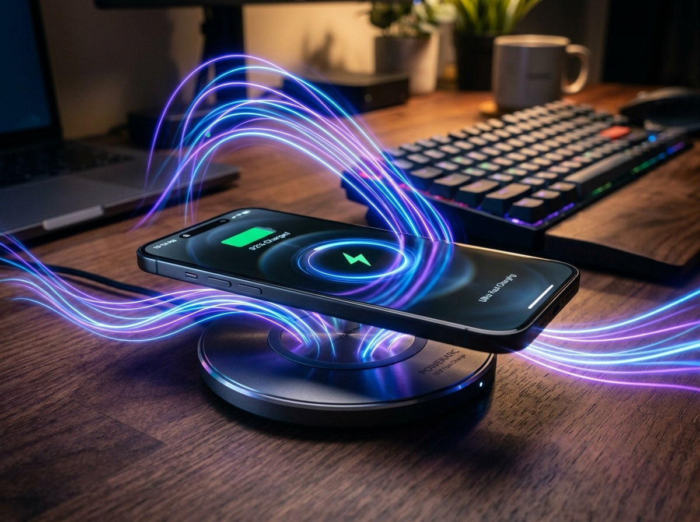

В 2026 году технологии ушли в космос: смартфоны заряжаются до 100% за 15 минут. Это кажется магией, но в голове всегда свербит мысль: «А не взорвется ли он? А не придется ли мне менять аккумулятор через год?». Маркетологи кричат о «безопасных протоколах», а диванные эксперты советуют заряжать телефон только от слабого блока из 2010 года.

На территории «ИЗИ ЧОЙС» мы не верим на слово. Давайте разберем, как на самом деле работает химия внутри вашего кармана и воспользуемся технологиями, не превращаясь в раба розетки.
Сама по себе «быстрая зарядка» не опасна. Опасен нагрев, который она вызывает. Литий-ионные батареи — это нежные химические реакторы. Когда температура внутри корпуса переваливает за 40-45°C, химия начинает разрушаться безвозвратно.
Если вы играете в тяжелую игру на зарядке — вы буквально «жарите» свой телефон. Если он лежит под подушкой и заряжается — вы сокращаете ему жизнь.
Химия аккумулятора болезненно реагирует, когда он пуст или заряжен под завязку. Заряжать до 100% и оставлять на зарядке на всю ночь — это как заставлять марафонца бежать на пределе возможностей лишний километр. Самый комфортный режим для долгой жизни батареи — держаться в диапазоне от 20% до 80%.
В современных смартфонах даже есть функция «сохранения батареи», которая программно ограничивает заряд на 80%. Включите её, и вам реально не придется менять аккумулятор через пару лет.
«Не оставляй на ночь, а то перезарядится» — этот совет из эпохи кнопочных телефонов пора забыть. Современные контроллеры питания внутри смартфона умнее многих из нас. Как только заряд доходит до финиша, они отсекают ток.
Проблема в другом: за ночь телефон понемногу разряжается (фоновые процессы) и снова начинает подзаряжаться до 100%. Эти микро-циклы и постоянный «полный бак» по капле подтачивают ресурс.
Смартфон создан для вас, а не вы для него. Не нужно трястись над каждым процентом, но пара полезных привычек сэкономит вам 10-15 тысяч рублей на замене аккумулятора в будущем.
Финальный алгоритм действий:
Делайте свой ИЗИ ЧОЙС! и пусть ваши гаджеты живут долго. 💸